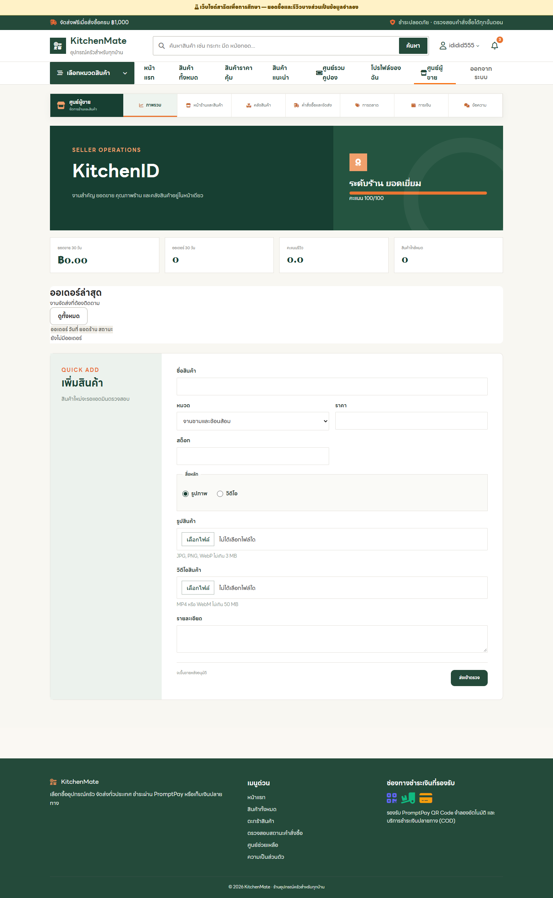03 ระบบผู้ขายแดชบอร์ดผู้ขายภาพรวมยอดขาย งานค้าง และทางลัดเพิ่มสินค้าวิธีใช้: เริ่มที่ตัวเลขสรุปและงานล่าสุด จากนั้นใช้เมนูด้านบนไปสินค้า คลัง ออเดอร์ หรือการเงินเปิดภาพเต็ม ↗
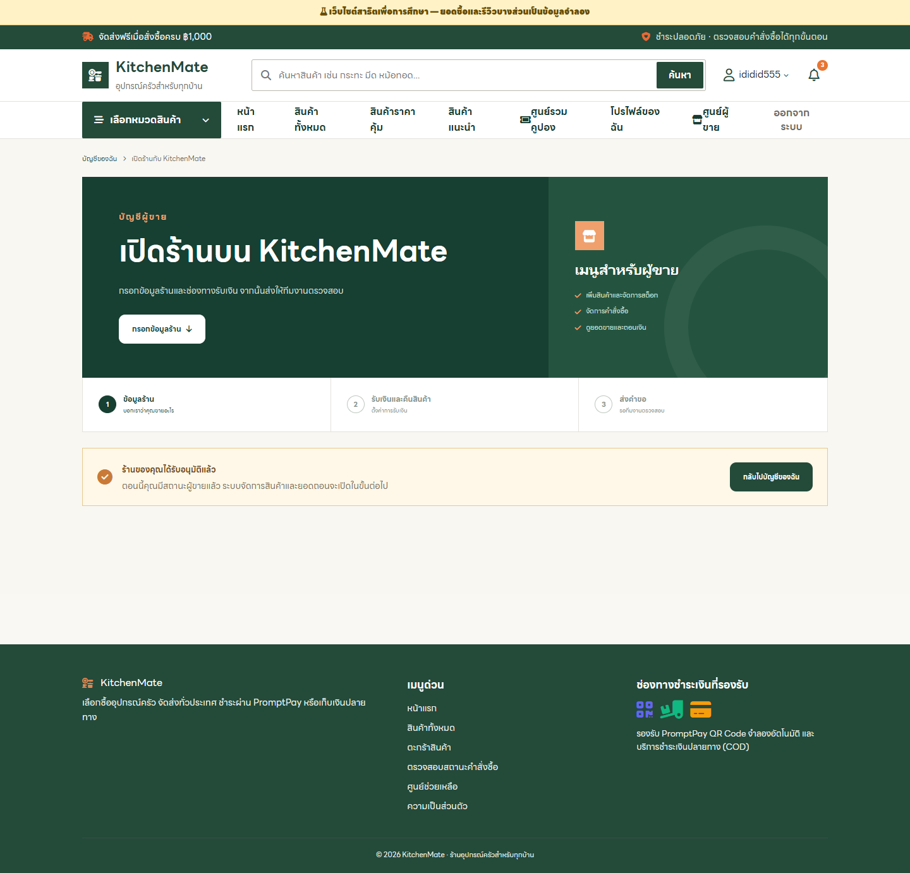03 ระบบผู้ขายตั้งค่าร้านข้อมูลร้านและสถานะบัญชีผู้ขายวิธีใช้: ตรวจสถานะร้านและข้อมูลพื้นฐานก่อนตั้งค่าหน้าร้านหรือเพิ่มสินค้าเปิดภาพเต็ม ↗
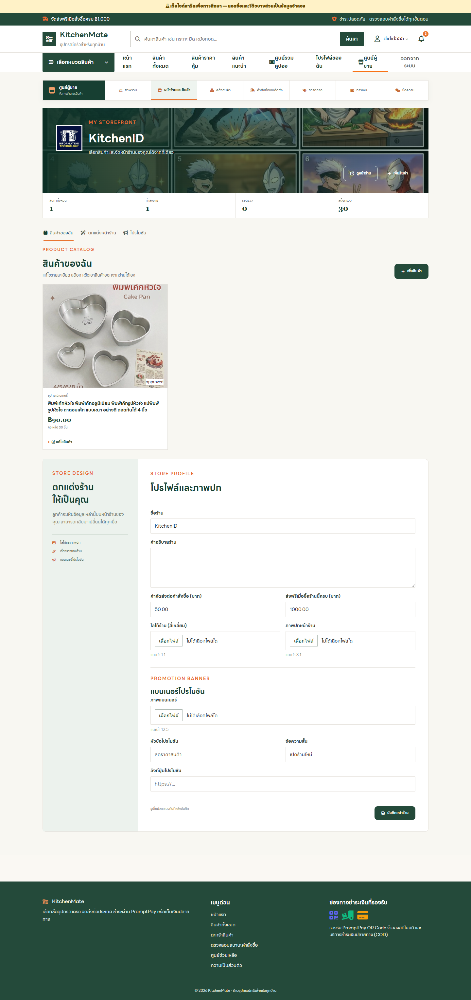03 ระบบผู้ขายร้านค้าของฉันข้อมูลหน้าร้าน แบนเนอร์ โปรโมชัน และการจัดการร้านวิธีใช้: แก้ชื่อร้าน คำอธิบาย รูปและแบนเนอร์ ตรวจข้อมูลก่อนบันทึกหน้าร้านเปิดภาพเต็ม ↗
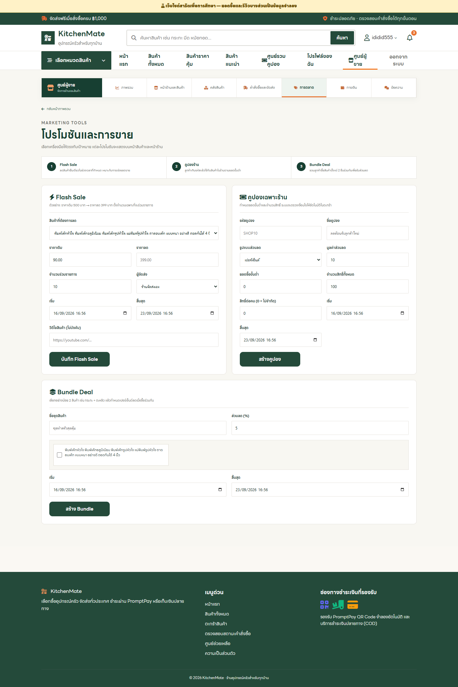03 ระบบผู้ขายจัดการสินค้าผู้ขายรายการสินค้าที่ลงขายและสถานะการอนุมัติวิธีใช้: ดูสินค้าของร้านและสถานะอนุมัติ เปิดแก้รายละเอียดหรือส่งสินค้าใหม่เข้าตรวจเปิดภาพเต็ม ↗
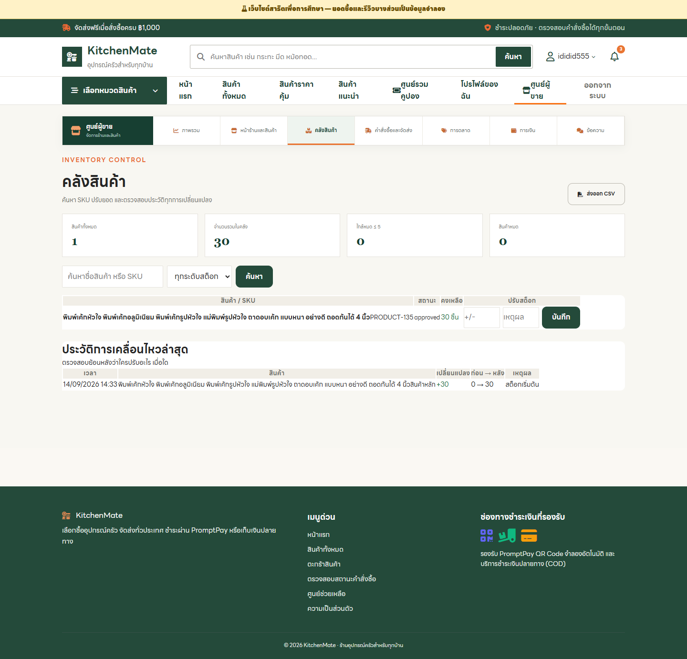03 ระบบผู้ขายสต็อกสินค้าจำนวนคงเหลือและการปรับสต็อกวิธีใช้: ตรวจจำนวนคงเหลือ กรองสินค้าใกล้หมด และบันทึกการปรับสต็อกเปิดภาพเต็ม ↗
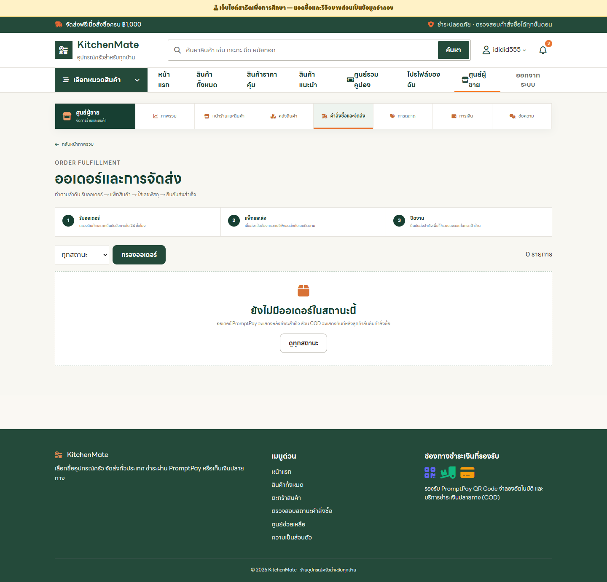03 ระบบผู้ขายคำสั่งซื้อของร้านออเดอร์ที่ต้องดำเนินการและสถานะการจัดส่งวิธีใช้: เปิดออเดอร์ของร้าน ดำเนินการตามลำดับรับงาน แพ็ก ส่ง และระบุเลขพัสดุเมื่อจัดส่งเปิดภาพเต็ม ↗
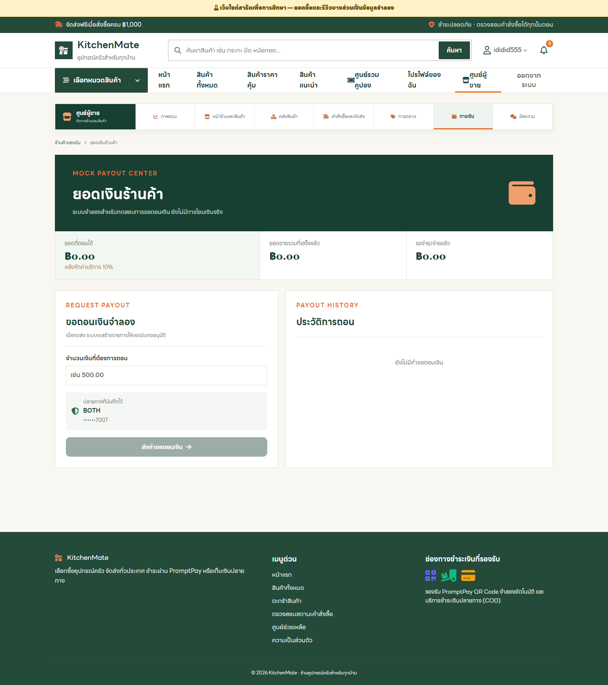03 ระบบผู้ขายกระเป๋าเงินผู้ขายยอดเงิน รายการรับเงิน และการถอนเงินวิธีใช้: ตรวจยอดเงินและรายการเคลื่อนไหว เปิดคำขอถอนเงินเมื่อยอดพร้อมถอนเปิดภาพเต็ม ↗
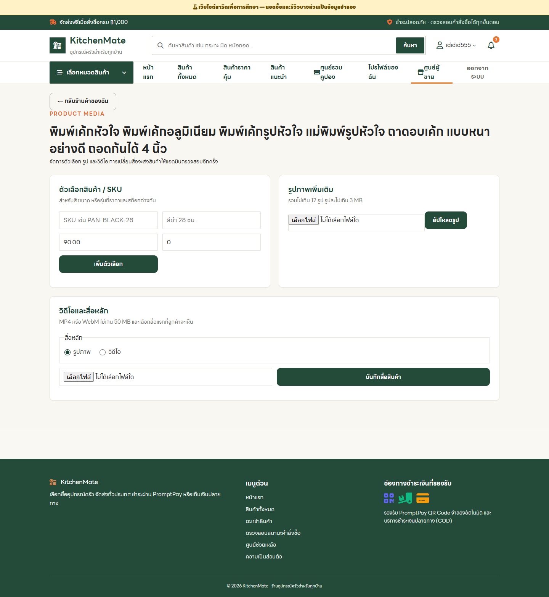03 ระบบผู้ขายตัวเลือกสินค้าตัวเลือกหรือรุ่นย่อยของสินค้าที่เลือกวิธีใช้: เพิ่มหรือแก้ตัวเลือกสินค้า รูปในแกลเลอรี และวิดีโอ แล้วบันทึกสื่อหลักเปิดภาพเต็ม ↗
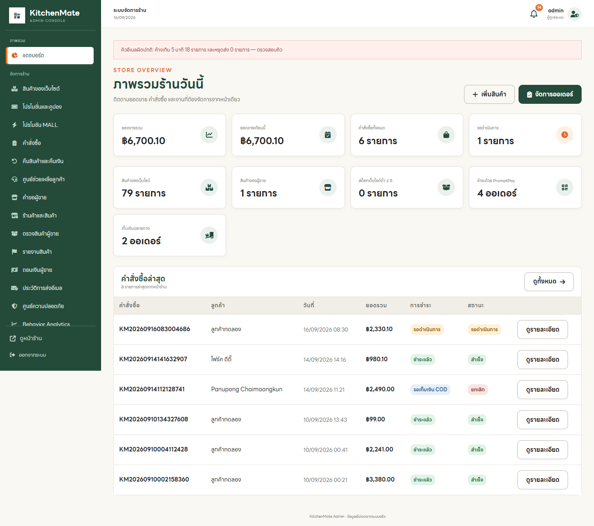04 ระบบแอดมินแดชบอร์ดแอดมินตัวเลขภาพรวมและงานที่ต้องติดตามวิธีใช้: ดูยอดขาย จำนวนออเดอร์ งานรอดำเนินการ และใช้ทางลัดไปหน้าที่ต้องจัดการเปิดภาพเต็ม ↗
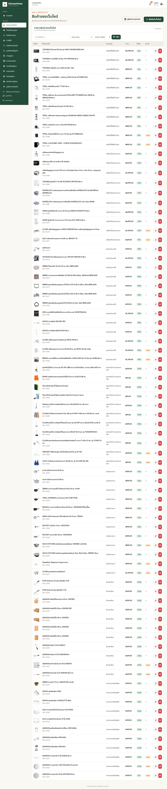04 ระบบแอดมินสินค้าของเว็บไซต์เพิ่ม แก้ไข และตรวจรายการสินค้าหลักวิธีใช้: ค้นหาสินค้า เพิ่มหรือแก้ข้อมูล ราคา รูป หมวด และสถานะการเผยแพร่เปิดภาพเต็ม ↗
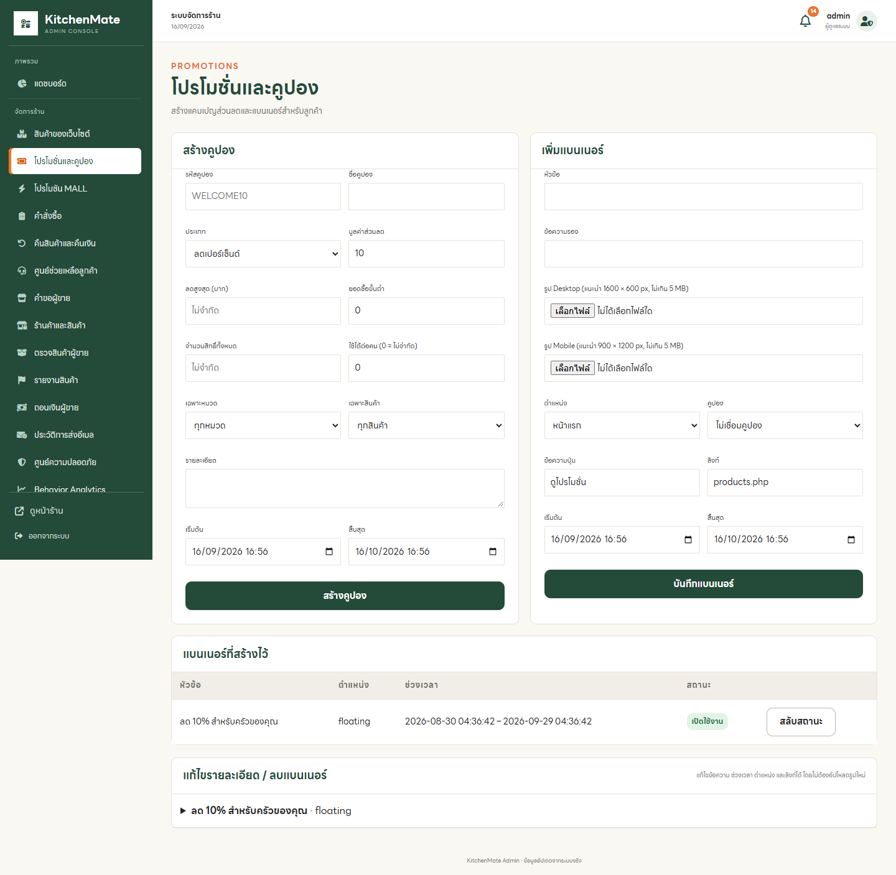04 ระบบแอดมินโปรโมชันและคูปองแคมเปญส่วนลดและคูปองวิธีใช้: สร้างหรือแก้คูปอง/โปรโมชัน ตั้งสิทธิ์และช่วงเวลา แล้วตรวจสถานะใช้งานเปิดภาพเต็ม ↗
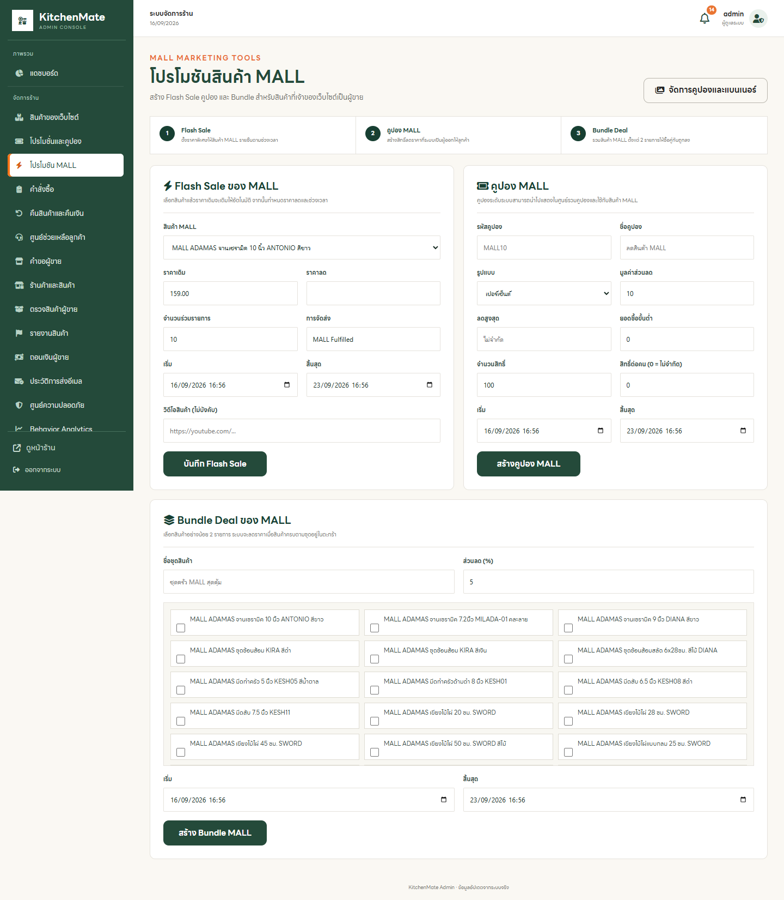04 ระบบแอดมินโปรโมชัน MALLกิจกรรมส่งเสริมการขายระดับเว็บไซต์วิธีใช้: จัดการแคมเปญระดับ MALL และการนำเสนอโปรโมชันบนเว็บไซต์เปิดภาพเต็ม ↗
04 ระบบแอดมินคำสั่งซื้อรายการออเดอร์ทั้งหมดและตัวกรองสถานะวิธีใช้: กรองออเดอร์ตามสถานะ เปิดรายละเอียด และติดตามขั้นตอนชำระ/จัดส่งเปิดภาพเต็ม ↗
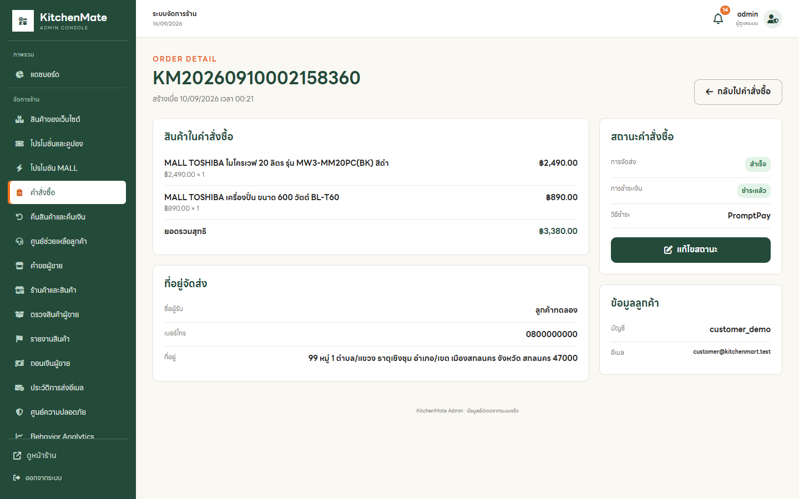04 ระบบแอดมินรายละเอียดออเดอร์ข้อมูลออเดอร์ การชำระเงิน และการจัดส่งวิธีใช้: ตรวจรายการสินค้า ผู้รับ การชำระ และประวัติสถานะ ก่อนดำเนินการต่อเปิดภาพเต็ม ↗
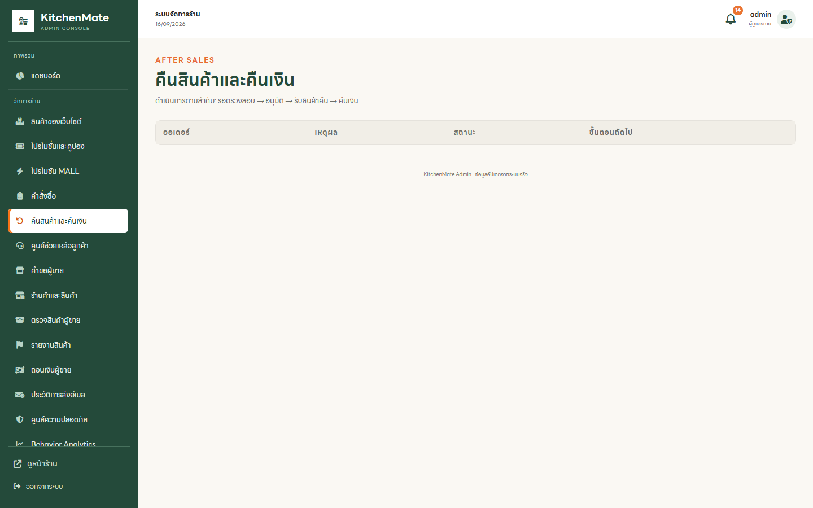04 ระบบแอดมินคืนสินค้าและคืนเงินรายการคำขอและสถานะการดำเนินการวิธีใช้: เปิดคำขอคืนสินค้า ตรวจเหตุผลและหลักฐาน แล้วอัปเดตผลการพิจารณาเปิดภาพเต็ม ↗
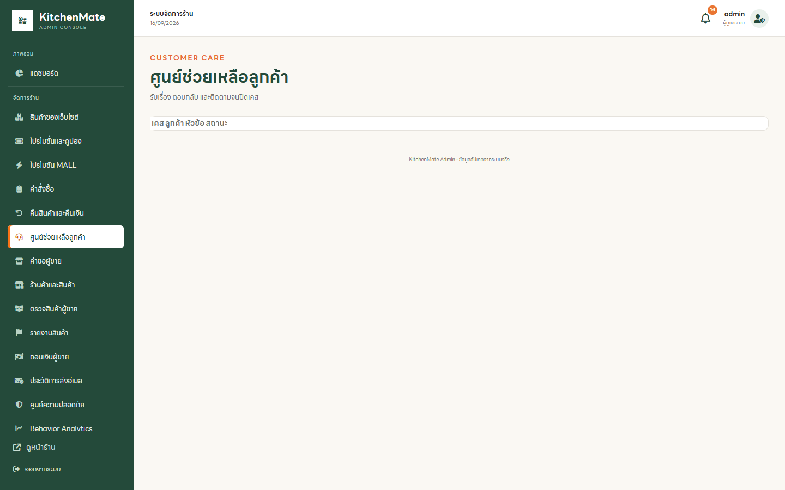04 ระบบแอดมินศูนย์ช่วยเหลือลูกค้าเคสช่วยเหลือและข้อความจากลูกค้าวิธีใช้: เปิดเคสลูกค้า อ่านข้อความและตอบกลับตามข้อมูลคำสั่งซื้อหรือบัญชีเปิดภาพเต็ม ↗
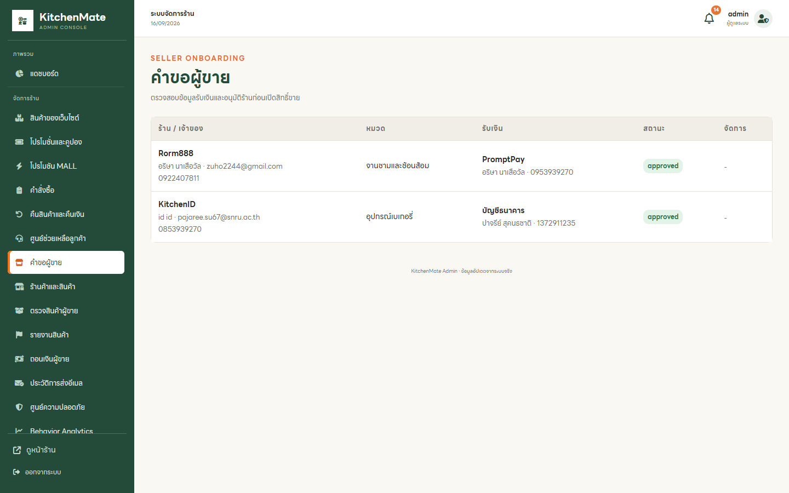04 ระบบแอดมินคำขอผู้ขายคำขอสมัครและการอนุมัติผู้ขายวิธีใช้: ตรวจข้อมูลคำขอผู้ขายและตัดสินใจอนุมัติหรือดำเนินการตามสถานะเปิดภาพเต็ม ↗
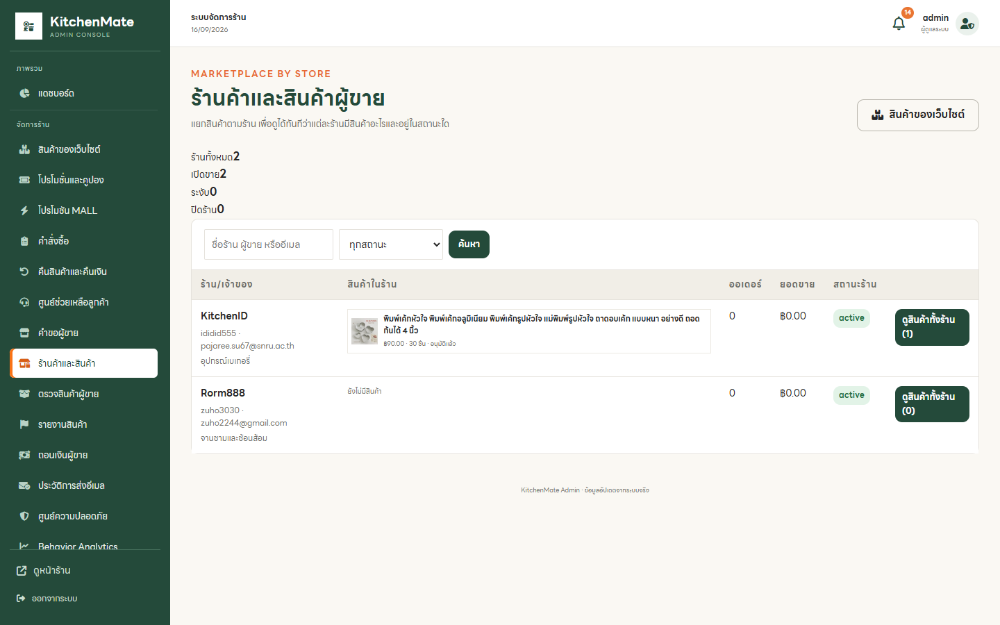04 ระบบแอดมินร้านค้าและสินค้ารายการร้านและสถานะร้านค้าวิธีใช้: ดูร้านทั้งหมด ค้นหาหรือเปิดรายละเอียดร้านเพื่อดูสถานะและสินค้าเปิดภาพเต็ม ↗
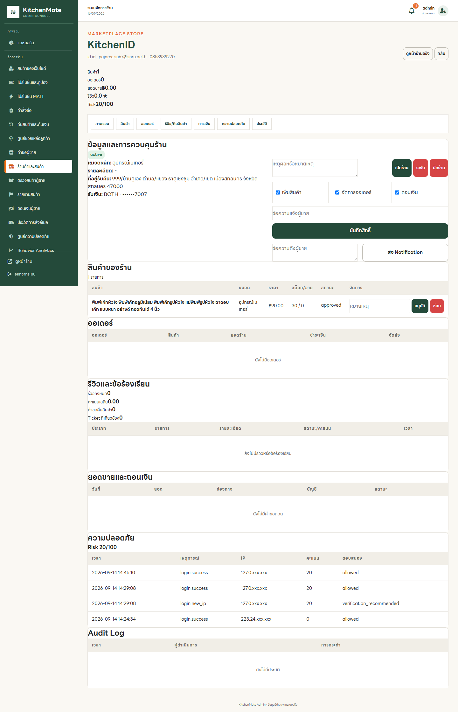04 ระบบแอดมินรายละเอียดร้านข้อมูลร้านและรายการสินค้าที่เกี่ยวข้องวิธีใช้: ตรวจข้อมูลร้าน สินค้า และข้อจำกัดที่ใช้กับร้านนั้นเปิดภาพเต็ม ↗
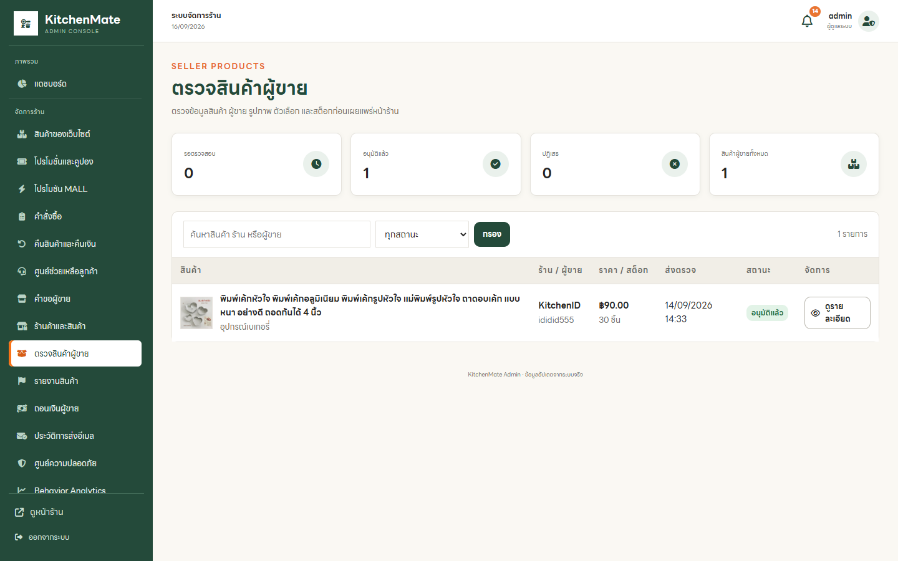04 ระบบแอดมินตรวจสินค้าผู้ขายสินค้ารออนุมัติและการตรวจสอบวิธีใช้: ตรวจสินค้าที่ผู้ขายส่งมา และอนุมัติ/ดำเนินการตามผลตรวจเปิดภาพเต็ม ↗
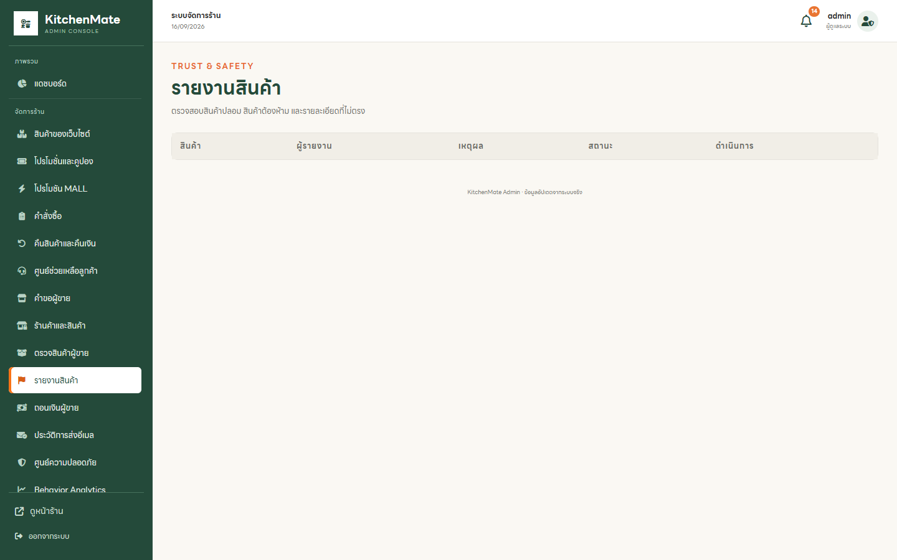04 ระบบแอดมินรายงานสินค้ารายการสินค้าที่ถูกแจ้งรายงานวิธีใช้: อ่านเหตุผลการรายงานสินค้า ตรวจรายการที่เกี่ยวข้อง แล้วบันทึกการดำเนินการเปิดภาพเต็ม ↗
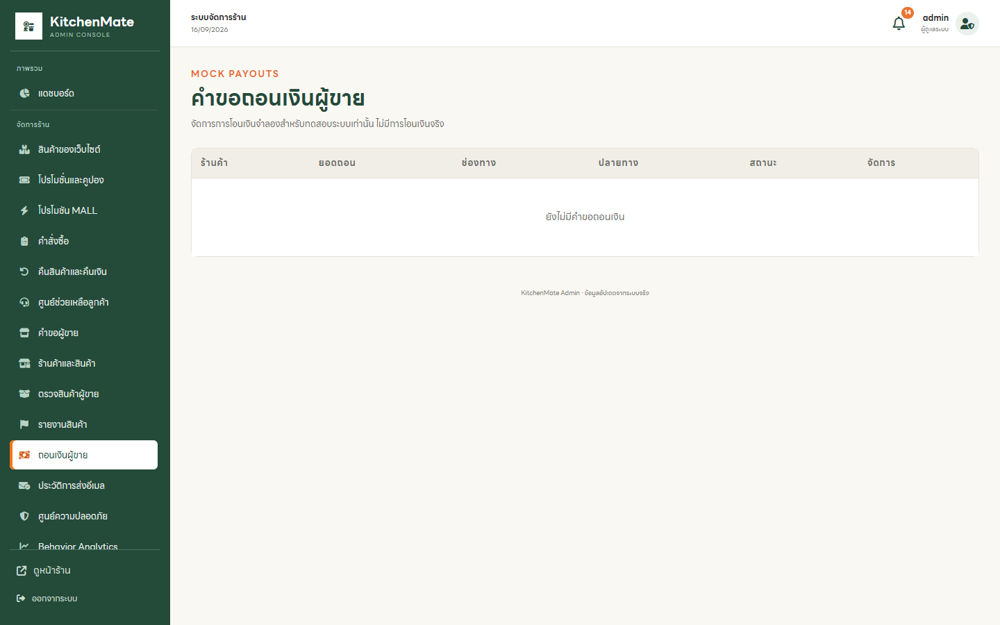04 ระบบแอดมินถอนเงินผู้ขายคำขอถอนและสถานะการจ่ายเงินวิธีใช้: ตรวจคำขอถอนเงินผู้ขาย ยอด และสถานะการจ่าย ก่อนบันทึกผลเปิดภาพเต็ม ↗
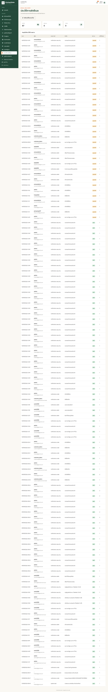04 ระบบแอดมินประวัติอีเมลสถานะการส่งอีเมลธุรกรรมวิธีใช้: ตรวจอีเมลที่ส่ง/ค้าง/ล้มเหลวเพื่อวิเคราะห์ปัญหาการแจ้งเตือนเปิดภาพเต็ม ↗
04 ระบบแอดมินศูนย์ความปลอดภัยเหตุการณ์และกฎความปลอดภัยวิธีใช้: ดูเหตุการณ์ความปลอดภัย กฎ และข้อมูลที่ระบบใช้เฝ้าระวังเปิดภาพเต็ม ↗
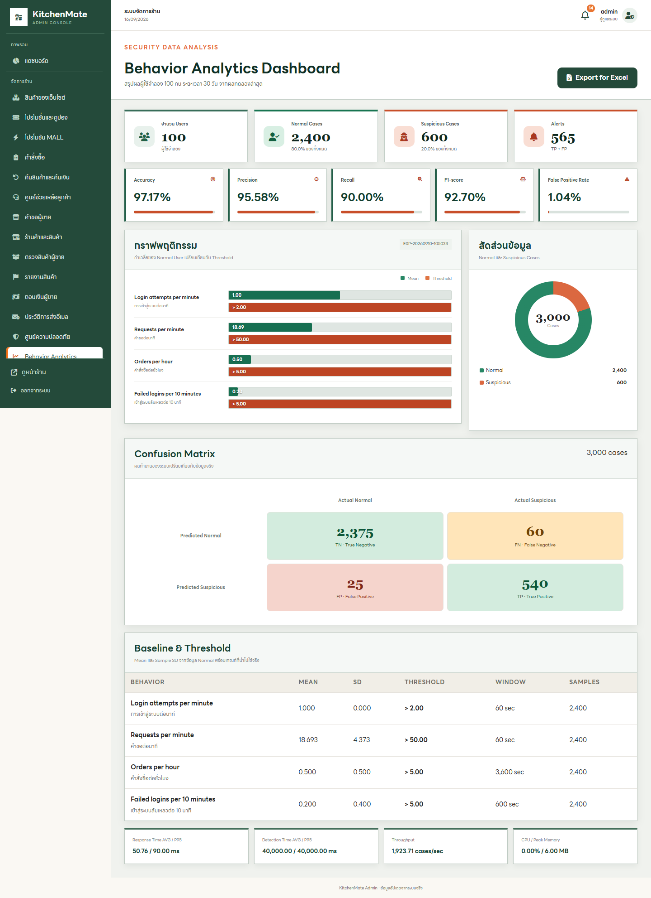04 ระบบแอดมินBehavior Analyticsข้อมูลพฤติกรรมการใช้งานวิธีใช้: อ่านแนวโน้มการใช้งานและพฤติกรรมเพื่อปรับปรุงหน้าเว็บเปิดภาพเต็ม ↗
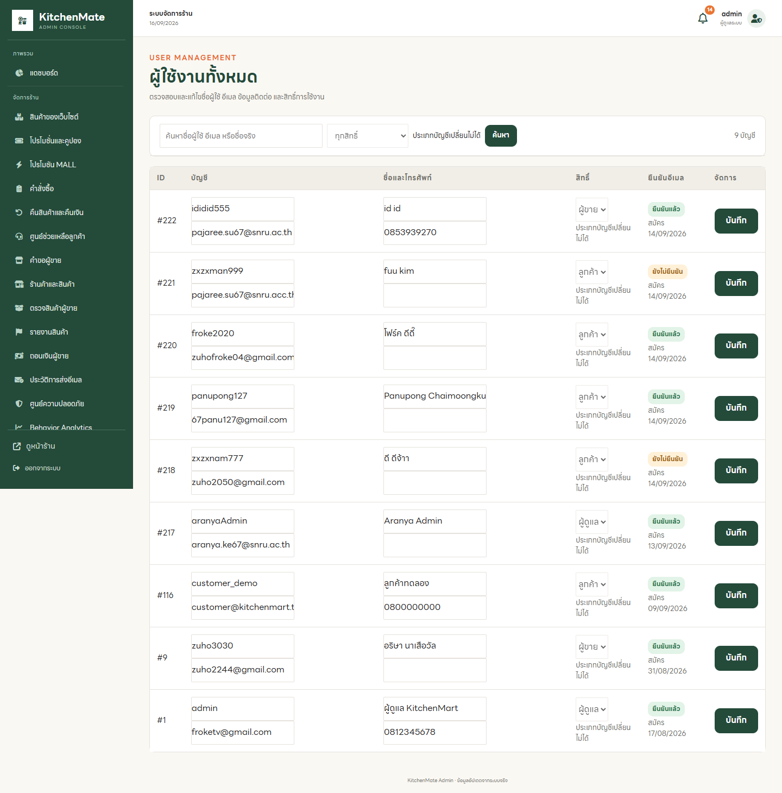04 ระบบแอดมินผู้ใช้งานทั้งหมดรายการผู้ใช้และบทบาทวิธีใช้: ค้นหาบัญชีผู้ใช้ ดูบทบาทและข้อมูลที่จำเป็นต่อการดูแลระบบเปิดภาพเต็ม ↗
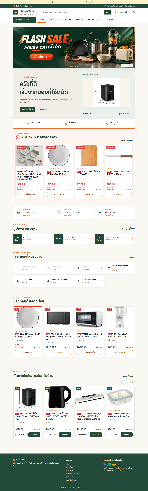01 เว็บสำหรับผู้เยี่ยมชมหน้าแรกแบนเนอร์ เมนูค้นหา หมวดสินค้า โปรโมชัน และจุดเริ่มต้นการเลือกซื้อวิธีใช้: ใช้แถบค้นหาด้านบนหรือเปิดเมนูหมวดสินค้า จากนั้นคลิกแบนเนอร์หรือการ์ดสินค้าเพื่อไปต่อเปิดภาพเต็ม ↗
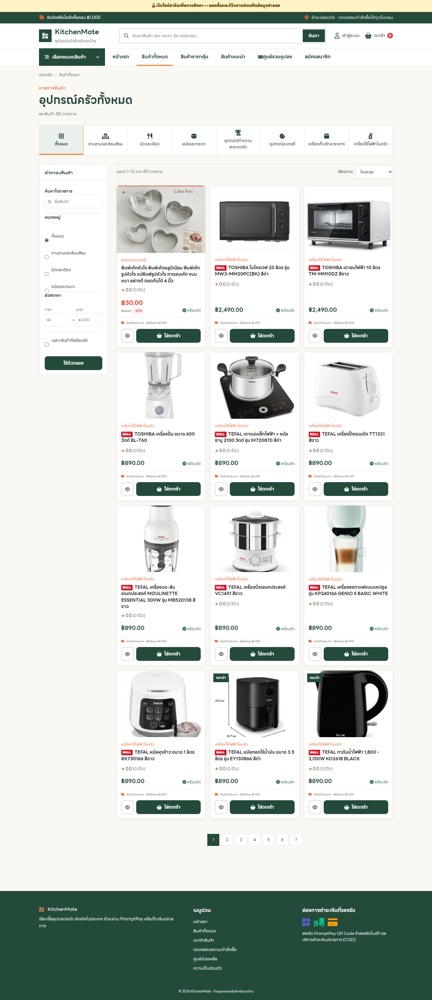01 เว็บสำหรับผู้เยี่ยมชมสินค้าทั้งหมดรายการสินค้า ตัวกรองหมวด ช่วงราคา และตัวเลือกการเรียงวิธีใช้: เลือกหมวดทางแถบด้านข้าง ปรับช่วงราคา/สต็อก และเปลี่ยนการเรียง ก่อนคลิกสินค้าที่สนใจเปิดภาพเต็ม ↗
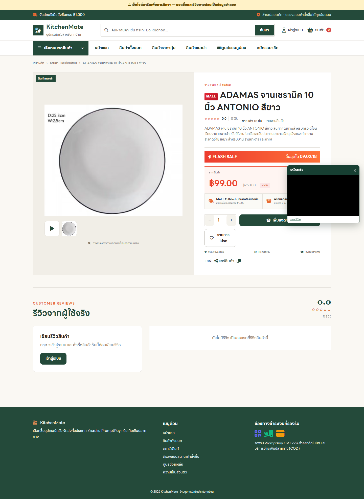01 เว็บสำหรับผู้เยี่ยมชมรายละเอียดสินค้าภาพ ราคา ตัวเลือก จำนวน รีวิว และปุ่มเพิ่มตะกร้าวิธีใช้: ตรวจภาพ ชื่อ ราคา สต็อก และรายละเอียด เลือกจำนวน แล้วกดเพิ่มลงตะกร้า; เลื่อนลงเพื่ออ่านรีวิวเปิดภาพเต็ม ↗
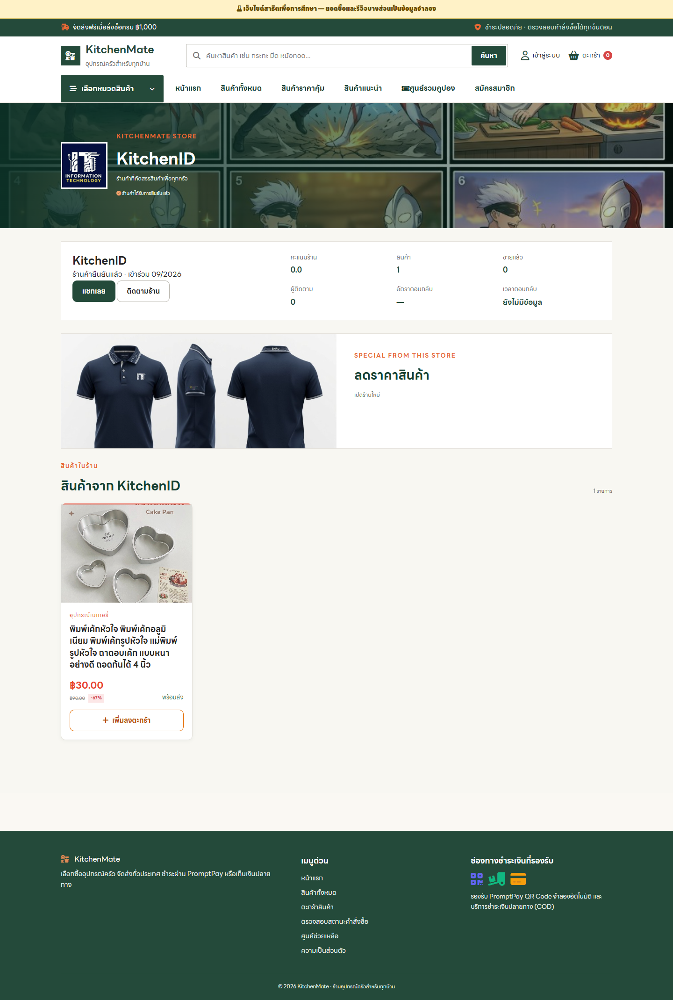01 เว็บสำหรับผู้เยี่ยมชมหน้าร้านผู้ขายข้อมูลร้าน รายการสินค้า และทางติดต่อผู้ขายวิธีใช้: ดูชื่อร้าน คะแนนและสินค้าของร้าน ใช้ปุ่มติดตามหรือแชทเมื่อเข้าสู่ระบบแล้วเปิดภาพเต็ม ↗
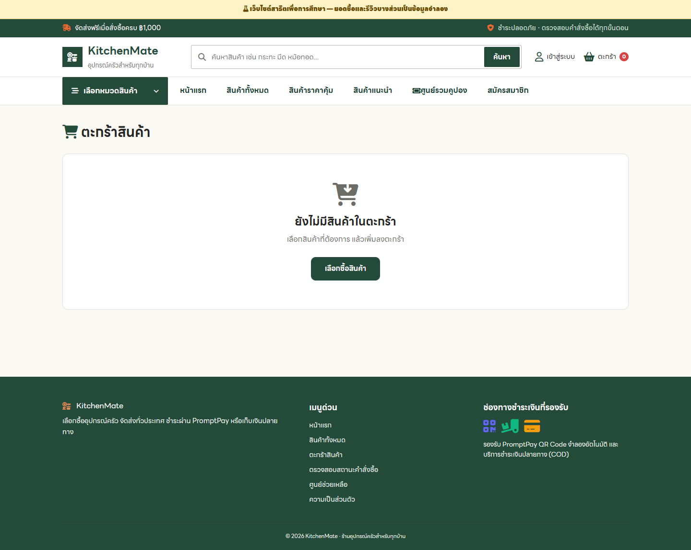01 เว็บสำหรับผู้เยี่ยมชมตะกร้าผู้เยี่ยมชมการแสดงตะกร้าก่อนเข้าสู่ระบบหรือก่อนเพิ่มสินค้าวิธีใช้: เมื่อยังไม่มีสินค้า ระบบแสดงสถานะตะกร้าว่าง กดเลือกซื้อสินค้าเพื่อกลับไปหน้ารายการเปิดภาพเต็ม ↗
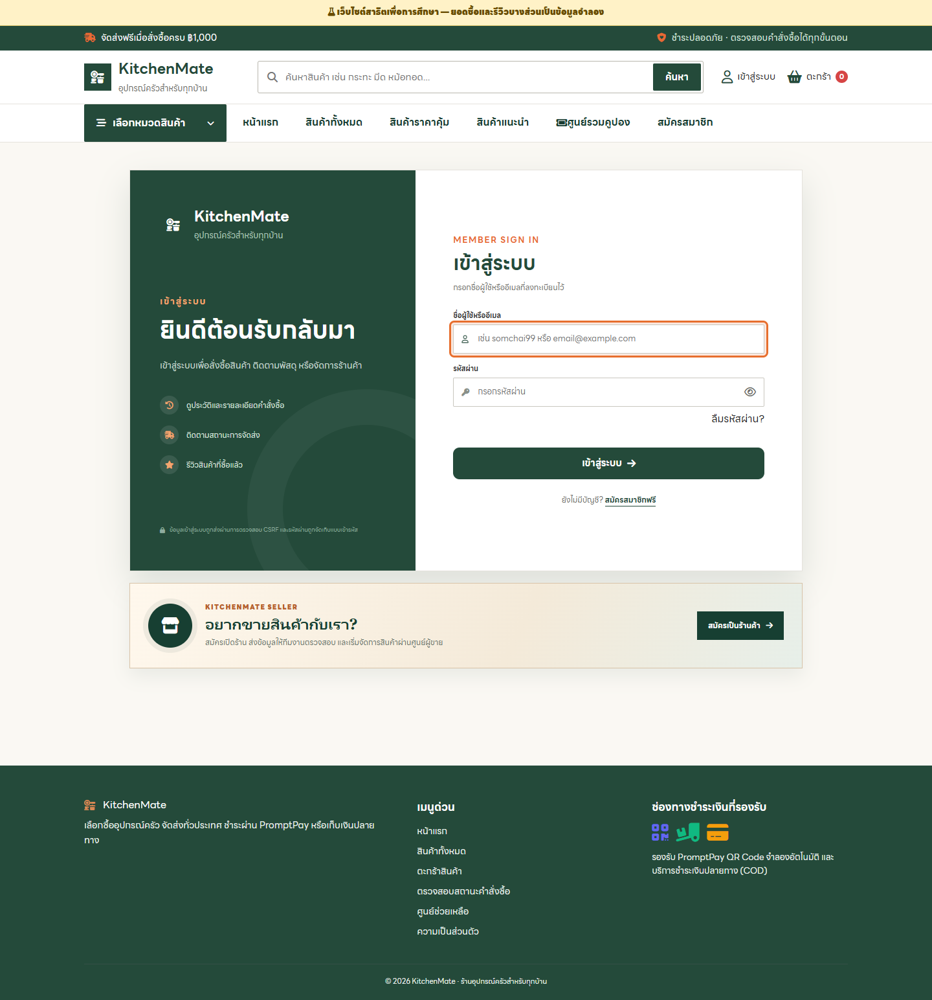01 เว็บสำหรับผู้เยี่ยมชมเข้าสู่ระบบแบบฟอร์มชื่อผู้ใช้หรืออีเมลและรหัสผ่านวิธีใช้: กรอกชื่อผู้ใช้/อีเมลและรหัสผ่าน แล้วกดเข้าสู่ระบบ; ใช้ลิงก์ลืมรหัสผ่านหากจำไม่ได้เปิดภาพเต็ม ↗
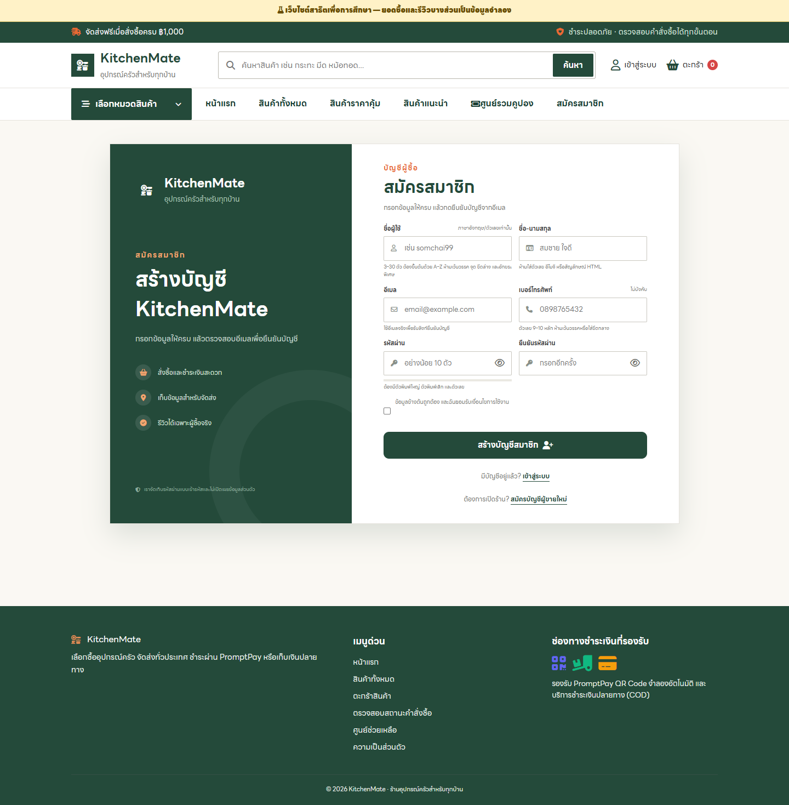01 เว็บสำหรับผู้เยี่ยมชมสมัครสมาชิกแบบฟอร์มสร้างบัญชีลูกค้าวิธีใช้: กรอกข้อมูลบัญชี ยอมรับเงื่อนไข แล้วส่งแบบฟอร์ม จากนั้นทำขั้นตอนยืนยันอีเมลตามที่เว็บแจ้งเปิดภาพเต็ม ↗
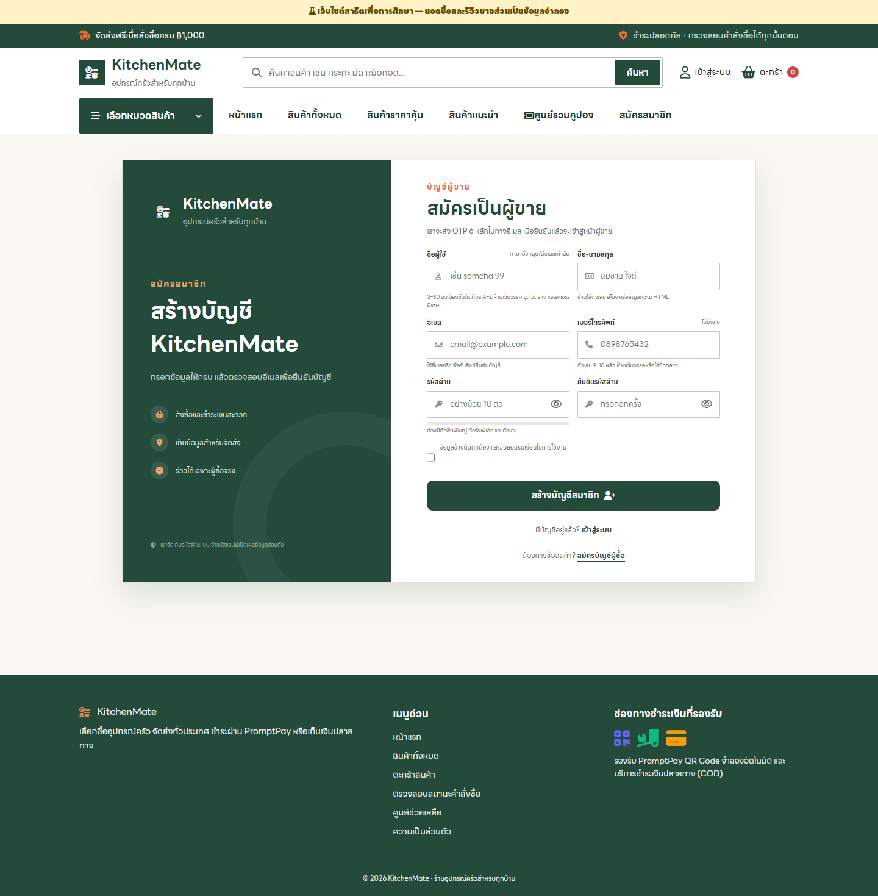01 เว็บสำหรับผู้เยี่ยมชมสมัครผู้ขายแบบฟอร์มสร้างบัญชีผู้ขายวิธีใช้: เลือกสมัครเป็นผู้ขาย กรอกข้อมูลติดต่อและรหัสผ่าน จากนั้นยืนยันอีเมลและข้อมูลร้านเปิดภาพเต็ม ↗
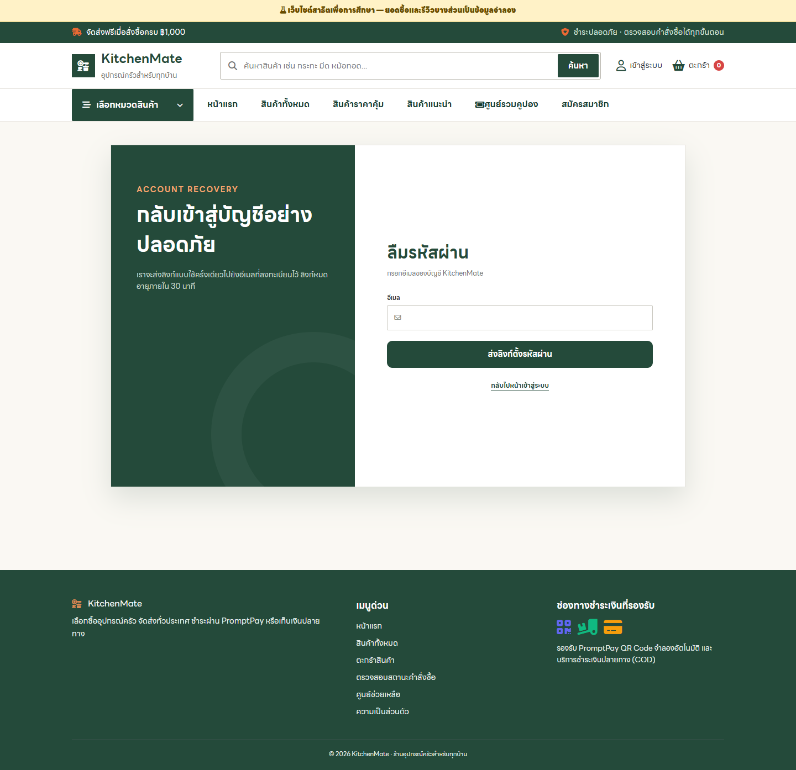01 เว็บสำหรับผู้เยี่ยมชมลืมรหัสผ่านแบบฟอร์มขอลิงก์ตั้งรหัสผ่านใหม่วิธีใช้: กรอกอีเมลของบัญชี แล้วตรวจอีเมลเพื่อเปิดลิงก์ตั้งรหัสผ่านใหม่เปิดภาพเต็ม ↗
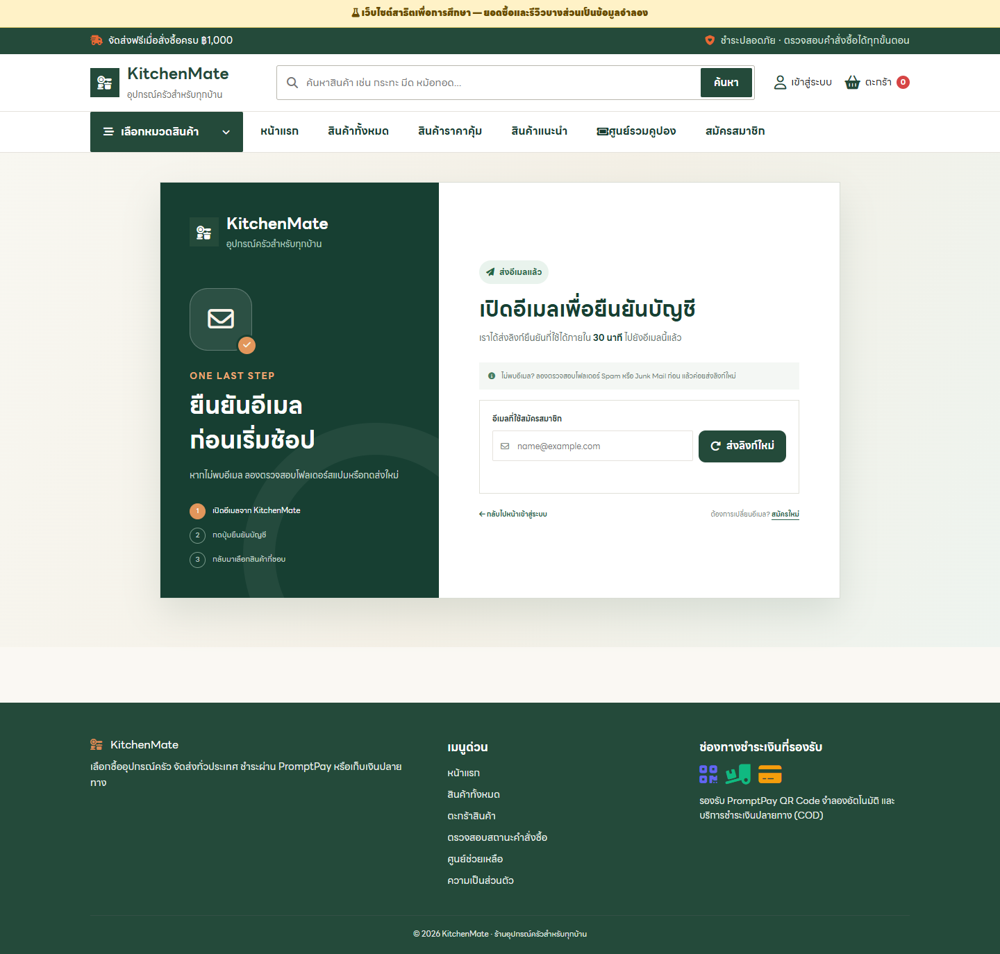01 เว็บสำหรับผู้เยี่ยมชมตรวจสอบอีเมลคำแนะนำหลังสมัครและปุ่มส่งลิงก์ยืนยันใหม่วิธีใช้: อ่านคำแนะนำ เปิดกล่องอีเมลและกดลิงก์ยืนยัน; หากไม่พบให้ตรวจ Spam/Junk หรือขอส่งใหม่เปิดภาพเต็ม ↗
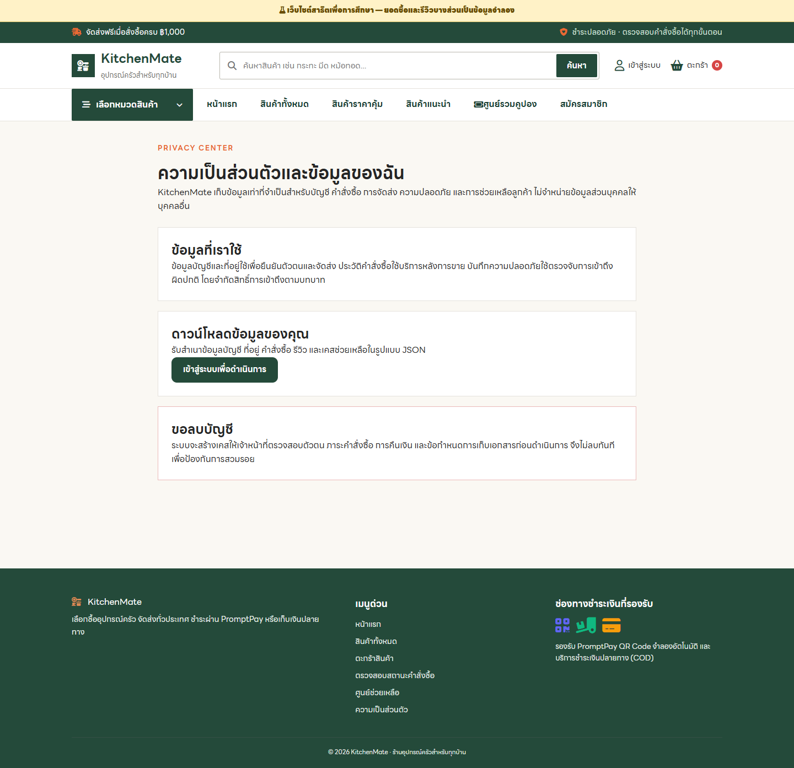01 เว็บสำหรับผู้เยี่ยมชมนโยบายความเป็นส่วนตัวข้อมูลนโยบายและสิทธิ์ข้อมูลส่วนบุคคลวิธีใช้: อ่านรายละเอียดการเก็บ ใช้ และดูแลข้อมูลส่วนบุคคลก่อนสมัครสมาชิกเปิดภาพเต็ม ↗
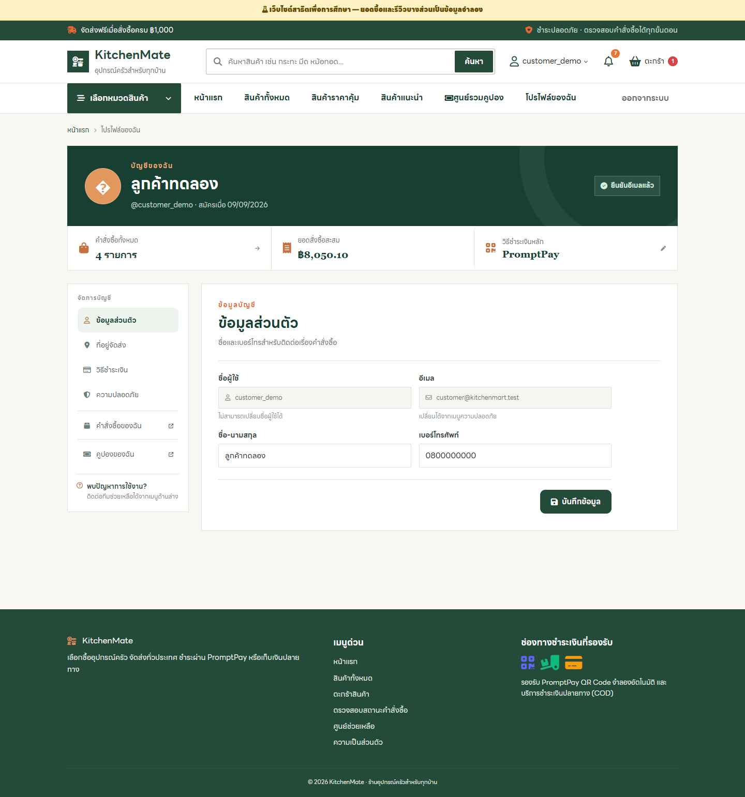02 บัญชีลูกค้าโปรไฟล์ลูกค้าข้อมูลบัญชีและการจัดการข้อมูลส่วนตัววิธีใช้: ตรวจข้อมูลบัญชี แก้ชื่อ เบอร์โทรหรือข้อมูลที่ระบบอนุญาต แล้วบันทึกเปิดภาพเต็ม ↗
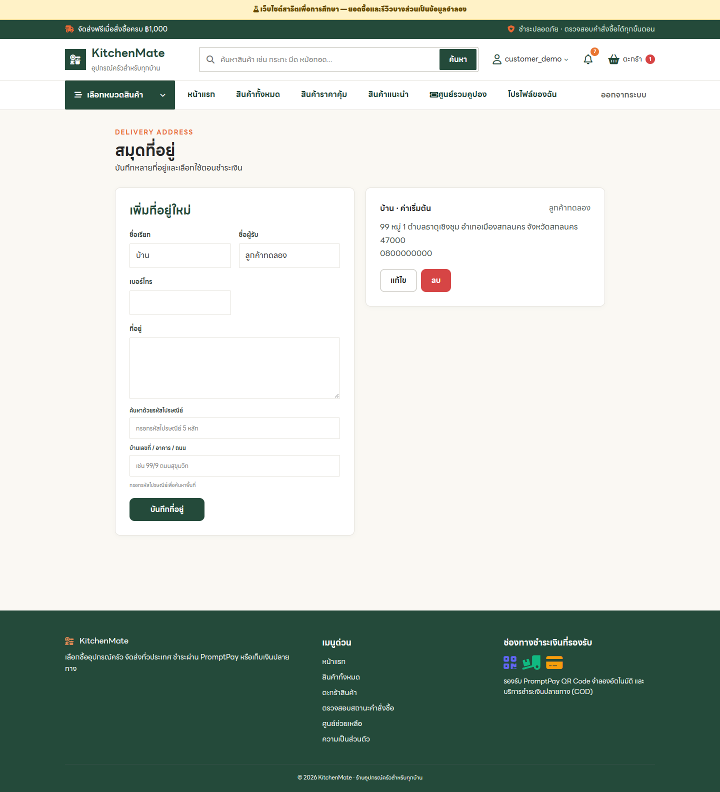02 บัญชีลูกค้าสมุดที่อยู่ที่อยู่จัดส่งและการเพิ่มหรือแก้ไขที่อยู่วิธีใช้: เพิ่มที่อยู่ใหม่ ตั้งเป็นค่าเริ่มต้น หรือแก้ข้อมูลผู้รับเพื่อใช้ตอนชำระเงินเปิดภาพเต็ม ↗
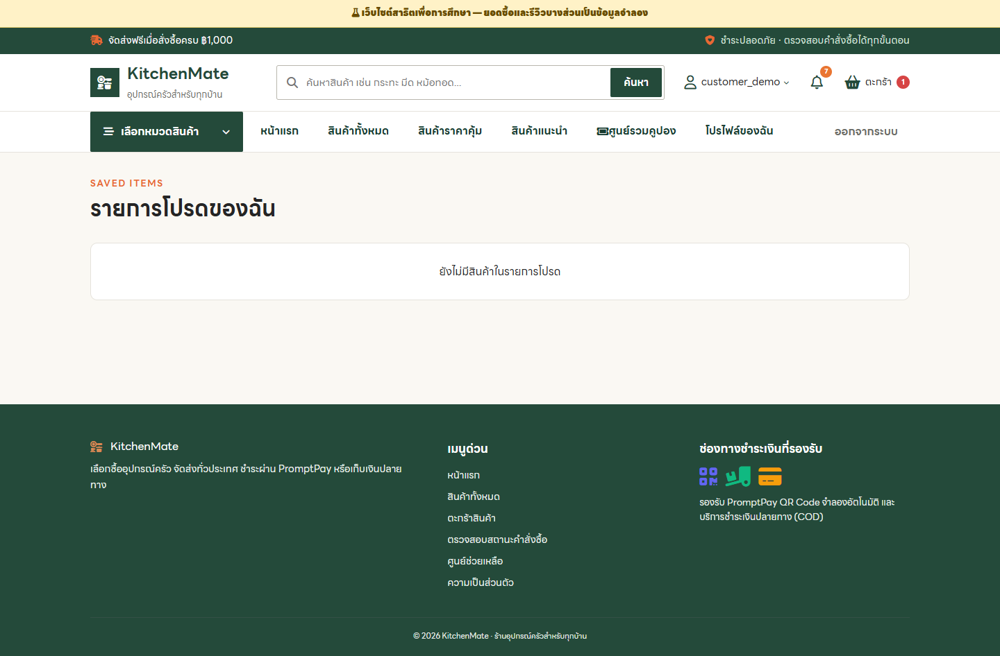02 บัญชีลูกค้ารายการโปรดสินค้าที่บันทึกไว้สำหรับกลับมาดูวิธีใช้: เปิดสินค้าที่บันทึกไว้ แล้วกลับไปหน้าสินค้าเพื่อสั่งซื้อหรือลบออกจากรายการโปรดเปิดภาพเต็ม ↗
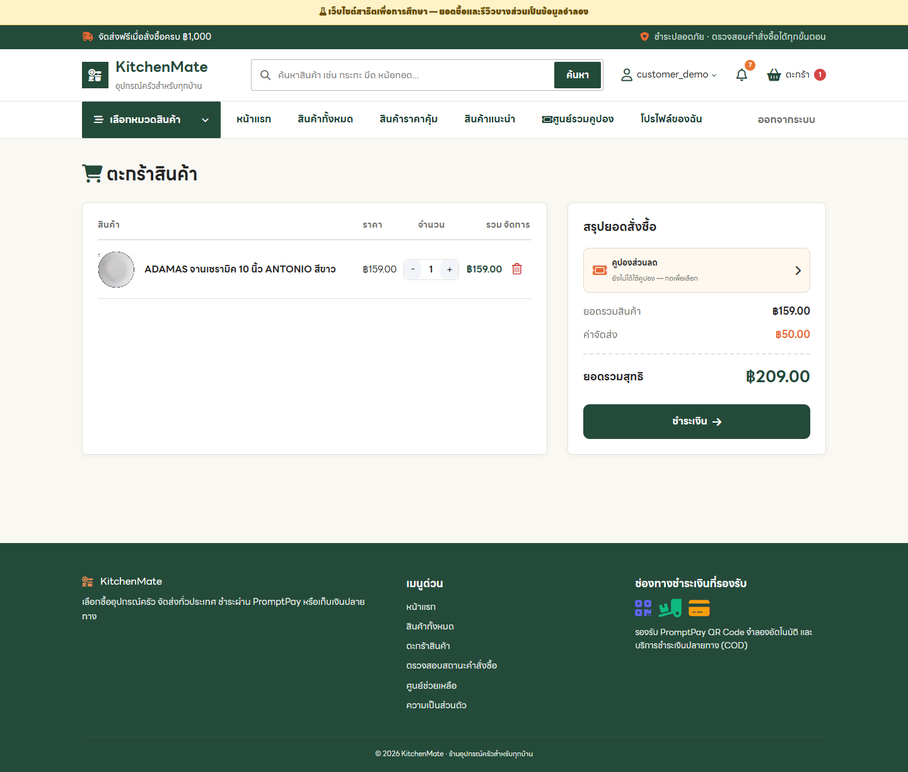02 บัญชีลูกค้าตะกร้าสินค้ารายการในตะกร้า จำนวนสินค้า และยอดรวมวิธีใช้: ตรวจชื่อ ราคาและจำนวนสินค้า ปรับจำนวนหรือลบรายการ แล้วไปหน้าชำระเงินเปิดภาพเต็ม ↗
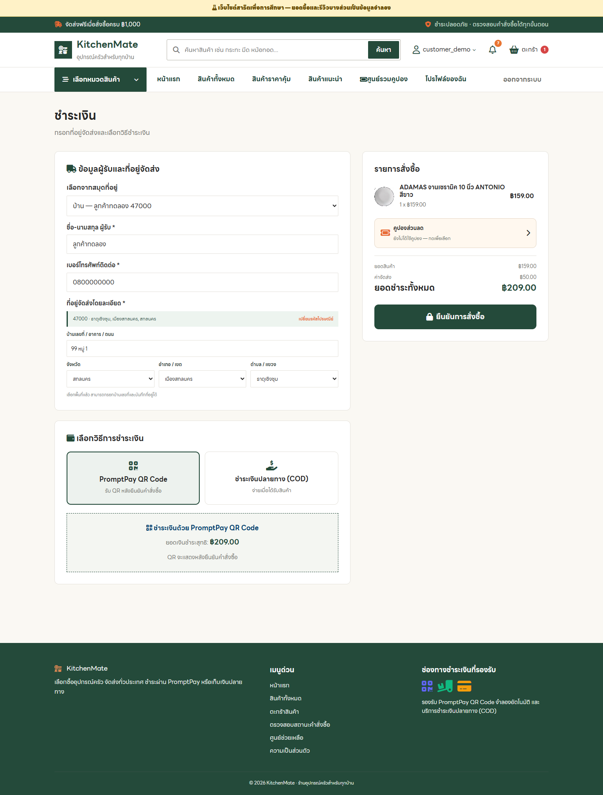02 บัญชีลูกค้าชำระเงินที่อยู่จัดส่ง คูปอง ยอดรวม และวิธีชำระเงินวิธีใช้: เลือกที่อยู่ ตรวจยอดรวม เปิดเลือกคูปอง เลือก PromptPay หรือ COD แล้วจึงกดยืนยันคำสั่งซื้อเปิดภาพเต็ม ↗
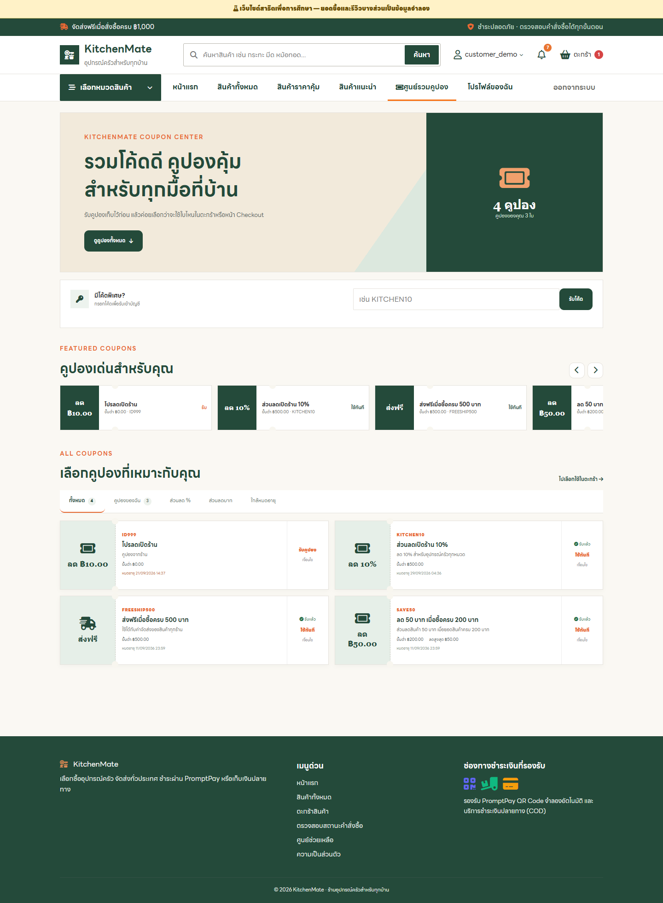02 บัญชีลูกค้าคูปองของฉันคูปองที่รับแล้วและเงื่อนไขการใช้งานวิธีใช้: ดูคูปองที่มีและเงื่อนไข เช่น ยอดขั้นต่ำหรือวันหมดอายุ แล้วนำไปเลือกในหน้าชำระเงินเปิดภาพเต็ม ↗
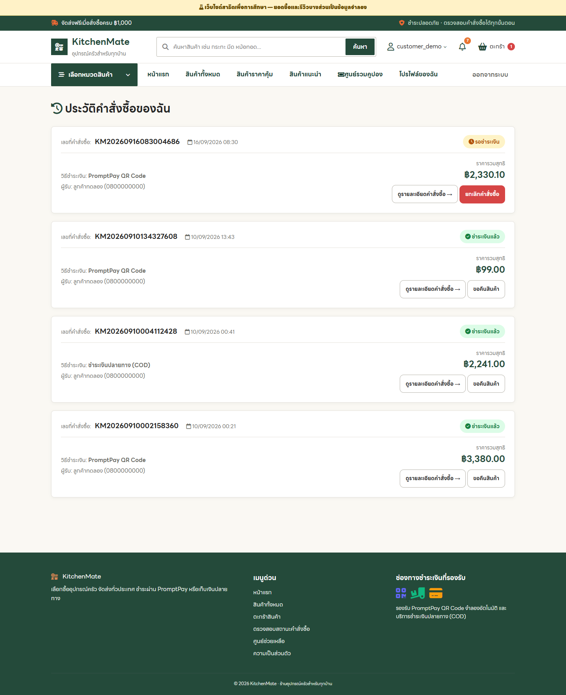02 บัญชีลูกค้าคำสั่งซื้อของฉันประวัติคำสั่งซื้อและสถานะวิธีใช้: ตรวจรายการสั่งซื้อทั้งหมด ใช้สถานะและหมายเลขออเดอร์เพื่อเลือกดูรายละเอียดเปิดภาพเต็ม ↗
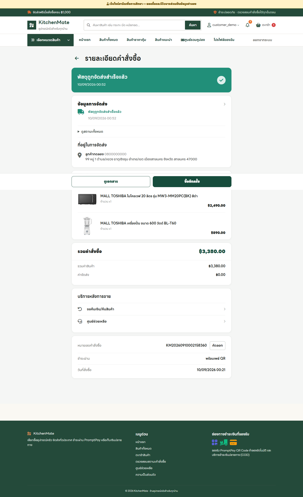02 บัญชีลูกค้ารายละเอียดคำสั่งซื้อรายการสินค้า การชำระเงิน การจัดส่ง และสถานะวิธีใช้: ตรวจสินค้าที่สั่ง ที่อยู่ วิธีจ่าย และลำดับสถานะ; ใช้ปุ่มบริการหลังการขายเมื่อเข้าเงื่อนไขเปิดภาพเต็ม ↗
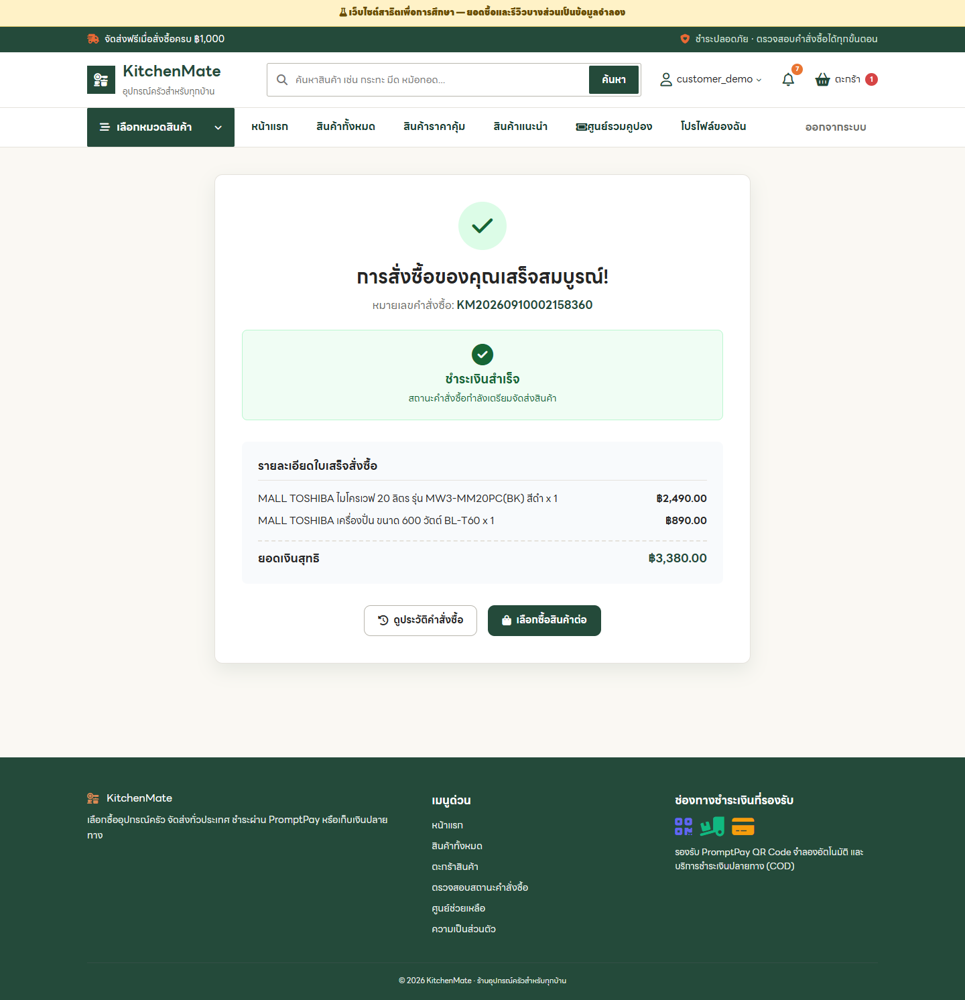02 บัญชีลูกค้าหน้าสั่งซื้อสำเร็จสรุปคำสั่งซื้อที่มีอยู่ของบัญชีหลังยืนยันรายการวิธีใช้: ดูหมายเลขและยอดของออเดอร์ที่มีอยู่ จากนั้นไปดูรายละเอียดหรือติดตามคำสั่งซื้อเปิดภาพเต็ม ↗
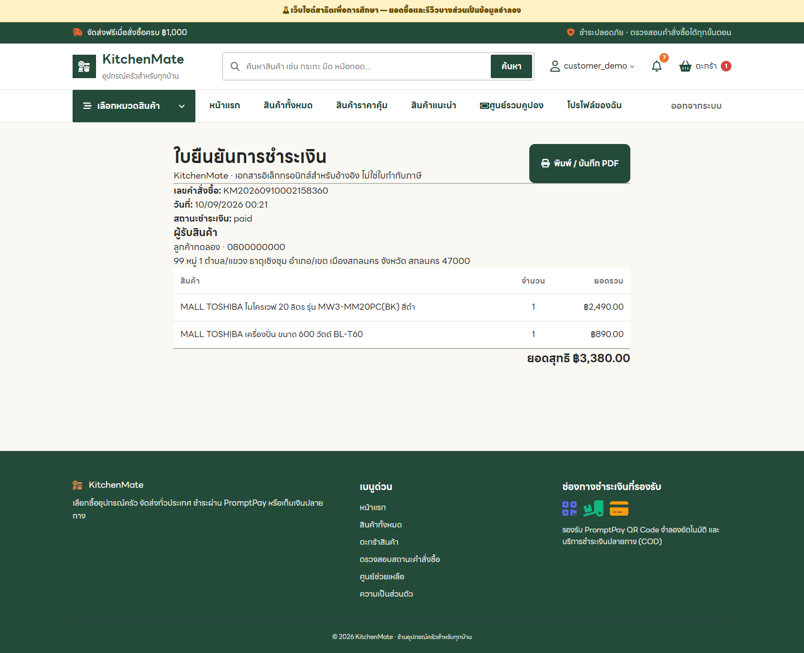02 บัญชีลูกค้าใบเสร็จเอกสารคำสั่งซื้อสำหรับออเดอร์ที่เลือกวิธีใช้: เปิดข้อมูลการซื้อของออเดอร์นั้น และใช้คำสั่งพิมพ์/บันทึกจากเบราว์เซอร์เมื่อจำเป็นเปิดภาพเต็ม ↗
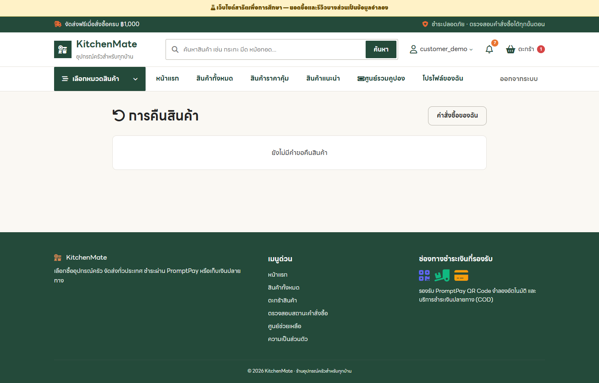02 บัญชีลูกค้าคำขอคืนสินค้าติดตามคำขอคืนและการคืนเงินวิธีใช้: ดูคำขอคืนสินค้าที่ส่งไว้และสถานะการพิจารณาเปิดภาพเต็ม ↗
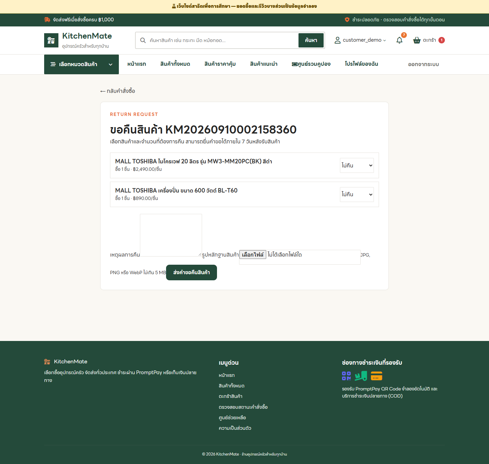02 บัญชีลูกค้ายื่นคำขอคืนสินค้าแบบฟอร์มระบุรายการและเหตุผลการคืนวิธีใช้: เลือกสินค้าที่ต้องการคืน ระบุเหตุผลและรายละเอียด แล้วตรวจข้อมูลก่อนส่งคำขอเปิดภาพเต็ม ↗
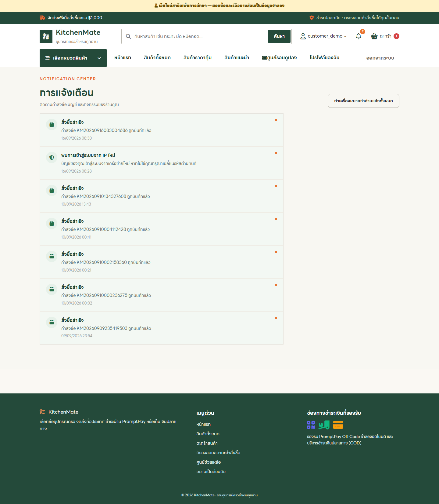02 บัญชีลูกค้าการแจ้งเตือนรายการแจ้งเตือนของบัญชีวิธีใช้: อ่านรายการแจ้งเตือนล่าสุด แล้วเปิดลิงก์ที่เกี่ยวข้องกับออเดอร์ ร้านค้า หรือบัญชีเปิดภาพเต็ม ↗
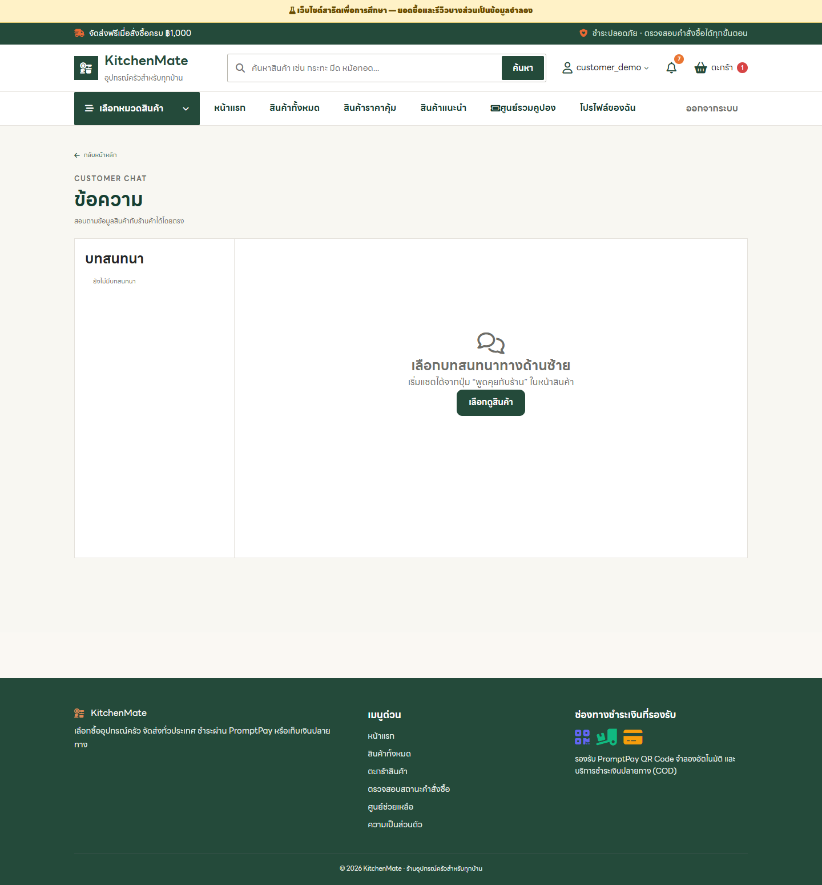02 บัญชีลูกค้าข้อความการสนทนากับร้านค้าวิธีใช้: เลือกคู่สนทนาหรือร้านค้า อ่านประวัติ และส่งข้อความสอบถามสินค้า/คำสั่งซื้อเปิดภาพเต็ม ↗
02 บัญชีลูกค้าศูนย์ช่วยเหลือการส่งคำถามหรือปัญหาให้ทีมดูแลวิธีใช้: เปิดศูนย์ช่วยเหลือ ระบุหัวข้อและรายละเอียดปัญหา แล้วติดตามคำตอบในระบบเปิดภาพเต็ม ↗
05 ตัวอย่างการใช้งานย่อยค้นหาสินค้าพิมพ์คำค้นในช่องค้นหาหรือเปิดผลลัพธ์การค้นหาเพื่อดูสินค้าที่ตรงคำเปิดภาพเต็ม ↗
05 ตัวอย่างการใช้งานย่อยหน้าต่างเลือกคูปองเปิดตัวเลือกคูปองในหน้าชำระเงิน ตรวจเงื่อนไขก่อนใช้เปิดภาพเต็ม ↗
05 ตัวอย่างการใช้งานย่อยชำระเงินปลายทางเลือกตัวเลือก COD ในหน้าชำระเงินก่อนยืนยันออเดอร์เปิดภาพเต็ม ↗
05 ตัวอย่างการใช้งานย่อยกรองออเดอร์รอดำเนินการเลือกสถานะรอดำเนินการในหน้าคำสั่งซื้อแอดมินเปิดภาพเต็ม ↗